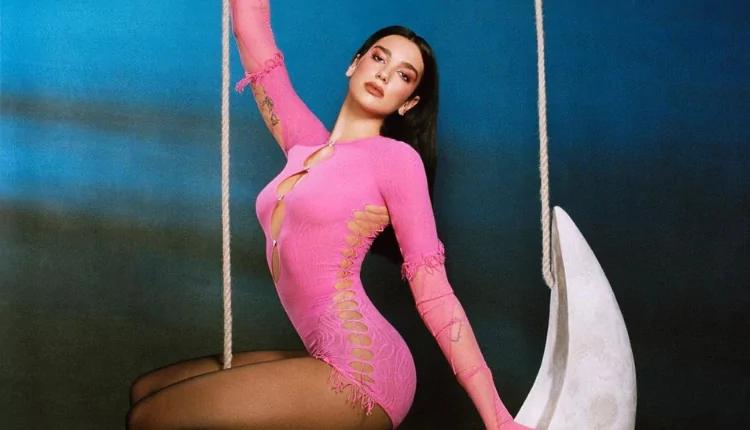

Cantante y Compositora
DUA LIPA
Biografía
Nació el 22 de agosto de 1995 en Londres (Inglaterra). Hija de padres albanokosovares que abandonaron Pristina durante en conflicto de Kosovo, con tan solo catorce años comenzó a realizar sus propias grabaciones de versiones de temas de diferentes artistas, entre los que figuraban Pink y Nelly Furtado.
EVENTOS IMPORTANTES
- Con quince años regresó a Londres, también trabajó de forma intermitente como modelo, camarera y relaciones públicas de un club nocturno.
- Comenzó a publicar en Youtube vídeos con sus versiones de temas de Alicia Keys y Christina Aguilera
- El primer tema compuesto por Dua Lipa fue el titulado "Lions, Tigers & Bears", escrito cuando sólo tenía dieciseis años.
- En 2015 comienza a trabajar en el que sería su primer álbum para Warner Music.
- Publicó en Octubre de este mismo año "Be the One", canción con la que consiguió abrirse camino en las listas de éxito de toda Europa.
Familia
Padres
- Anesa Lipa
- Dukagjin Lipa.
Hermanos:
- Rina Lipa
- Gjin Lipa